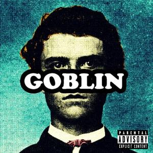
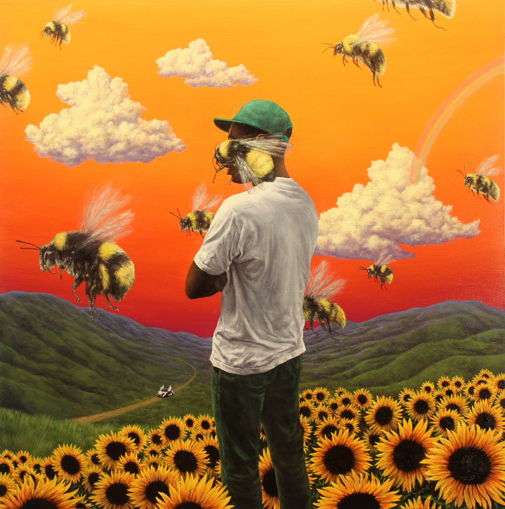

1. Goblin
2. Yonkers
3. Radicals
4. She (feat. Frank Ocean)
5. Transylvania
6. Nightmare
7. Tron Cat
8. Her
9. Sandwitches (feat. Hodgy Beats)
10. Fish / Boppin' Bitch
11. Analog (feat. Hodgy Beats)
12. Bitch Suck Dick (feat. Jasper Dolphin & Taco)
13. Window (feat. Domo Genesis, Frank Ocean, Hodgy Beats & Mike G)
14. Au79 (Instrumental)
15. Golden
16. Burger (feat. Hodgy Beats)
17. Untitled 63 (Instrumental)
18. Steak Sauce

1. Wolf
2. Jamba (feat. Hodgy Beats)
3. Cowboy
4. Awkward
5. Domo23
6. Answer
7. Slater (feat. Frank Ocean)
8. 48
9. Colossus
10. PartyIsntOver/Campfire/Bimmer (feat. Laetitia Sadier & Frank Ocean)
11. IFHY (feat. Pharrell)
12. Pigs
13. Parking Lot (feat. Casey Veggies & Mike G)
14. Rusty (feat. Domo Genesis & Earl Sweatshirt)
15. Trashwang (feat. Na'kel, Jasper, Lucas, L-Boy, Taco, Left Brain, & Lee Spielman)
16. Treehome95 (feat. Coco O & Erykah Badu)
17. Tamale
18. Lone

1. DEATHCAMP
2. BUFFALO
3. PILOT
4. RUN
5. FIND YOUR WINGS
6. CHERRY BOMB
7. BLOW MY LOAD
8. 2SEATER
9. THE BROWN STAINS OF DARKEESE LATIFAH PART 6-12 (REMIX) ft. ScHoolboy Q
9.5. SPECIAL (Bonus Track)
10. FUCKING YOUNG / PERFECT ft. Charlie Wilson and Kali Uchis
11. SMUCKERS ft. Kanye West and Lil Wayne
12. KEEP DA O’S ft. Pharrell Williams
13. OKAGA, CA ft. Clementine Creevy
14. YELLOW ft. Kali Uchis (Bonus Track)

1. “Foreword”
2. “Where This Flower Blooms”
3. “Sometimes…”
4. “See You Again”
5. “Who Dat Boy?”
6. “Pothole”
7. “Garden Shed”
8. “Boredom”
9. “I Ain’t Got Time!”
10. “911/Mr. Lonely”
11. “Dropping Seeds”
12. “November”
13. “Glitter”
14. “Enjoy Right Now Today”